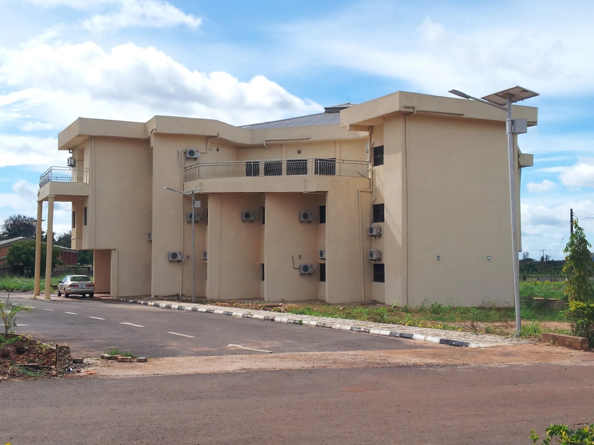
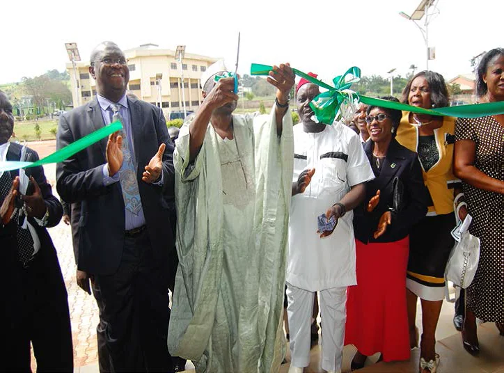

Solar Thermal
Solar water and air heaters, crop dryers, concentrators and solar refrigeration.

A research centre of the Energy Commission of Nigeria at the University of Nigeria, Nsukka, working on renewable and alternative energy since 1982.
Our mandate covers research, development, dissemination and manpower training across solar, biomass, wind, hydro, geothermal, coal, petroleum, energy management and the environment.
Read our storyThe units listed in the Centre's published staff directory.
Solar water and air heaters, crop dryers, concentrators and solar refrigeration.
Anaerobic digestion, biofuels, pyrolysis and conversion of agricultural and municipal waste.
Design, testing and evaluation of PV systems, solar cells and thin films.
Energy audits, efficiency programmes and cookstove testing at the National Stove Eligibility Laboratory.
Wind resource measurement and the weather data that underpin system design.
Coal and solid fuel studies, including smokeless briquettes and efficient stoves.
Energy data, training programmes and short courses for technicians and graduates.
Fabrication of prototypes and devices produced on demand.
Analytical and test facilities serving every research unit.
Devices developed in our workshops, many for rural agriculture and households. Units can be produced on request.
A commercial-scale solar rice dryer designed, constructed and installed by the Centre for a rice production company.
A solar water heater that circulates water naturally, without a pump.
Brooders of various sizes that use solar heat in place of electric bulbs for raising chicks.
A solar thermal incubator developed at the Centre for hatching eggs in poultry production.
An absorption refrigerator that collects solar heat during the day and converts it to cooling in the evening and night.
Solar dryers for crops, and for poultry waste, cow dung and pig droppings.
Biogas digester applications and cookstoves for domestic use, with stove performance tested at the National Stove Eligibility Laboratory.
A photovoltaic installation at the Centre used for demonstration and research.
Sources: Solar Energy Applications in Nigeria (Energy Commission of Nigeria paper, OSTI); papers by NCERD researchers.
The Centre is supervised by the Energy Commission of Nigeria. The Commission's governing board, as listed on its website, includes the Minister of Innovation, Science and Technology.


Titles as listed on the Energy Commission of Nigeria leadership page, energy.gov.ng.



Act No. 62 creates the Energy Commission of Nigeria to coordinate the country's energy resources.
An Act of the National Assembly establishes the Centre at Nsukka, alongside three other research centres.
The Centre begins full work on the Nsukka campus, funded directly by the Federal Government.
Decree No. 12 of 1988, and Decree No. 19 of 1989, charge the Energy Commission with supervising the centres.
NCERD hosts the 4th International Conference and Training Workshop with GIZ, alongside solar PV training.
The 5th edition is held at the Centre, physically and virtually, on post-COVID-19 energy solutions.
A new call for papers opens with a 20-day practical solar PV training workshop.
Our international conference and training workshop series brings scientists, engineers, social scientists and students to the NCERD complex, with hands-on solar PV training.
Held with a professional solar PV training workshop organised with the German Agency for International Cooperation.
On sustainable energy as a solution to post-COVID-19 energy challenges. Proceedings published in 2023.
Call for papers, with a 20-day practical solar PV training workshop for engineers, scientists and electricians.
The Commission's research centres and institutions across Nigeria, each hosted by a university and focused on one part of the energy sector.
University of Nigeria, Nsukka
Usmanu Danfodiyo University, Sokoto
University of Lagos
University of Ilorin
University of Benin
Abubakar Tafawa Balewa University, Bauchi
Confluence University of Science and Technology (CUSTECH), Osara, Kogi State